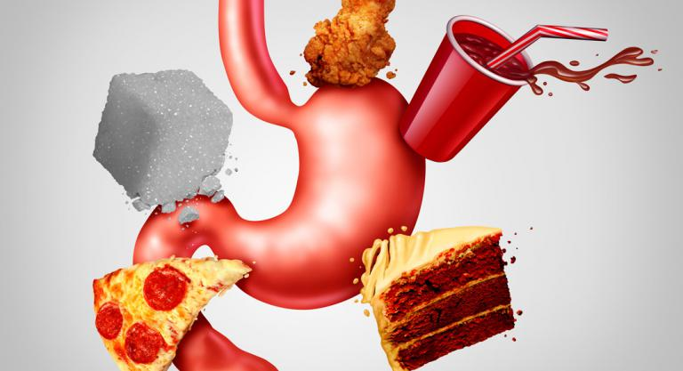

Las causas de la obesidad son diversas y pueden estar relacionadas con factores biológicos, sociales, culturales y psicológicos. Algunas de las más comunes son:
Consumo excesivo de grasas, azúcares y carbohidratos.
Poca o nula actividad física en la vida diaria.
Factores socioculturales, como un menor nivel de estudios y menor nivel de ingresos para comprar alimentos saludables.
Consumo de alimentos incorrecto, tabaquismo y la ingesta de alcohol.
Predisposición genética.
Alteraciones hormonales.
En su sentido más simple, el cuerpo gana grasa cuando almacena el exceso de energía, mismo que surge de consumir más energía alimentaria (consumo excesivo de alimentos) de la que necesita el organismo para funcionar correctamente (metabolismo, fisiológico).
Este desequilibrio en el consumo y gasto energético tiene varias causas:
Trastorno genético
Vivir en un entorno que permite y favorece bajos niveles de actividad física
Comportamiento sedentario prolongado
Consumo abundante de alimentos, especialmente alimentos ricos en energía (por ejemplo, en forma de grasas, aceites, azúcares y almidones)

| SIGIENTE | ANTERIOR | MENU |